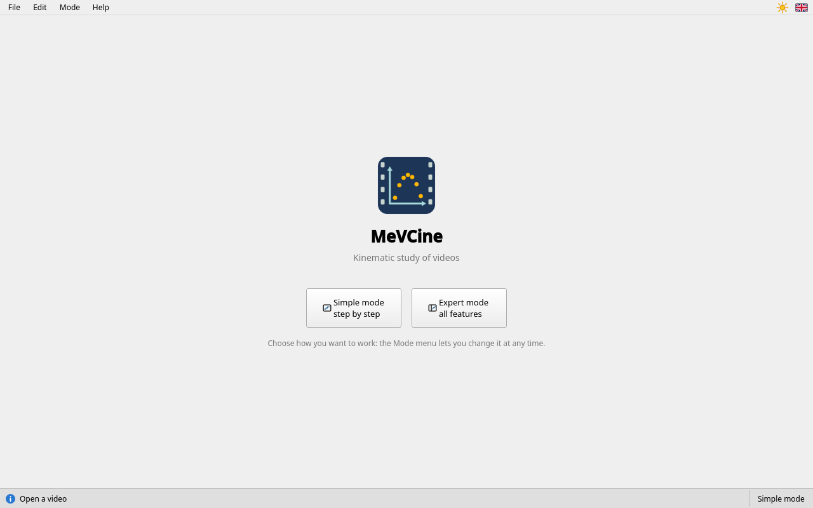

Installing MeVCine
For teachers: a portable version or an installer on Windows, a package or an AppImage on Linux
The portable version (Windows)
MeVCine-version-windows-x64.zip contains a folder, MeVCine-version, to copy
as it is, with no installation (USB stick, shared folder, disk of each computer). It contains:
mevcine.exe | the program, with the Qt libraries (the *.dll files, the
plugins and translations folders, and qt.conf) |
|---|---|
ffmpeg/ | the ffmpeg and ffprobe programs, which read the videos (including the HEVC of phones), with their licence. Do not separate these files from the folder. |
data/help | this guide |
licences/ | the licences of the shipped libraries, and the list of their versions |
COPYING.txt, NOTICE.txt | the licence of MeVCine |
LISEZMOI.txt | the first launch, in a few lines (in French) |
The installer (Windows)
MeVCine-version-windows-x64-setup.exe installs the same folder for all users in
Program Files\MeVSuite\MeVCine, with a shortcut in the Start menu (MeVSuite folder) and, if asked, on
the desktop. .mevcine projects then open with a double-click. It is uninstalled from the Windows
Settings. Deployment on many computers (WAPT, GPO), with no window or question:
MeVCine-version-windows-x64-setup.exe /VERYSILENT /SUPPRESSMSGBOXES /NORESTARTSilent uninstallation:
"C:\Program Files\MeVSuite\MeVCine\unins000.exe" /VERYSILENT /SUPPRESSMSGBOXES /NORESTARTThe identifier of the installer does not change from one version to the next: a new version replaces the old one.
On Windows
Double-click on mevcine.exe (or on the Start menu shortcut). On first launch, Windows may show
“Windows protected your PC”, because the program is not signed: More info, then Run anyway.
Display needs no graphics acceleration: MeVCine also works in a virtual machine or a remote desktop. If the window does not open, see Troubleshooting.
On Linux
- Ubuntu 26.04:
sudo apt install ./mevcine_version_amd64.deb. - Fedora 45:
sudo dnf install ./mevcine-version-1.fc45.x86_64.rpm. Fedora's own ffmpeg (ffmpeg-free) does not decode all phone formats (HEVC in particular): install the one from RPM Fusion (RPM Fusion repository enabled, thensudo dnf swap ffmpeg-free ffmpeg --allowerasing). - AppImage, with no installation, for recent distributions (Ubuntu 24.04, Debian 13, Fedora 40
or newer):
MeVCine-version-x86_64.AppImage, a single file, ffmpeg included, to make executable (right-click › Properties, orchmod +x) and then start.
The package installs MeVCine in the applications menu and declares FFmpeg as a dependency; .mevcine projects open with a
double-click, and videos with Open with › MeVCine. A graphical desktop is needed (Wayland or X11). File
dialogs are those of the desktop (GNOME, KDE…), and the desktop's dark theme is followed as long as the student has
not chosen one.
Check the installed application
- Sign in with a student’s permissions and launch MeVCine with the shortcut intended for the practical. An ordinary first launch offers both modes. A shortcut using
--simpleor--expertopens the specified mode directly. - Open the recording you will distribute. Check the first and last usable frames, rotation and frame rate. Footage from a different phone can require a different decoder.
- Mark three frames, save the project in the student’s folder, close and reopen it. Check one position. Export a CSV and verify that the spreadsheet reads time, x and y as three columns.
- Press F1 and open a screenshot in the guide. The installed pages and illustrations are available offline.


The command line
mevcine the mode used last time mevcine --simple fall.mp4 simple mode (or -s), with a video mevcine --expert project.mevcine expert mode (or -e), with a project mevcine -d 2 … debug messages (1 to 3) mevcine --help these options
Without an option, MeVCine takes the mode used last time (on first launch, it asks for it); a shortcut to
mevcine.exe --simple always opens simple mode. A project (.mevcine)
can also be given on the command line, or dropped onto the window. See
Deploying MeVCine in a computer room.